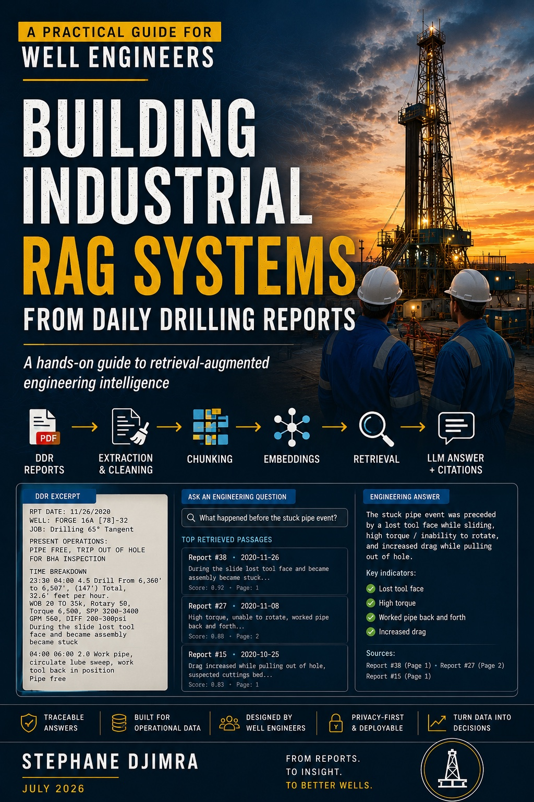
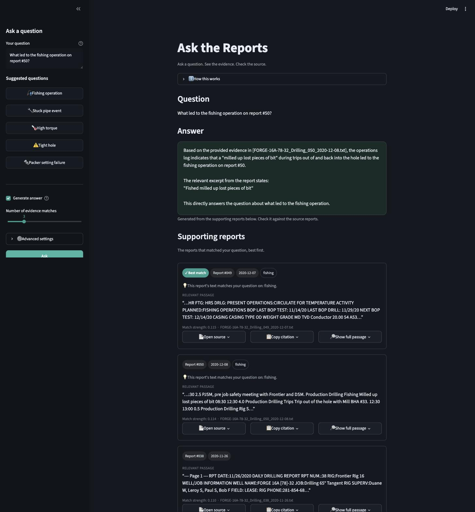

Building Industrial RAG Systems from Daily Drilling Reports
A hands-on guide to retrieval-augmented engineering intelligence
Welcome

Every rig produces a paper trail. Every well produces a story — told in Daily Drilling Reports (DDRs), scattered across shared drives, scanned PDFs, and email attachments, written by dozens of different hands in a shorthand that only the field understands.
That story holds answers your team needs today: Have we seen this stuck pipe signature before? What led to the packers failing to set before that fishing run? Have we had losses like this before?
Somewhere in your archive, the answer already exists. Finding it is the problem.
This book builds, from scratch and in plain Python, a system that can read that archive and answer those questions — with evidence, not guesses. You will not start with theory. You will start with a single PDF and a script that reads it. By the end, you will have an Industrial DDR Intelligence Platform: a retrieval-augmented generation (RAG) system purpose-built for drilling and completions data, that you built chapter by chapter and understand end to end.
Every example in this book uses real Daily Drilling Reports — not invented ones. The archive is from Utah FORGE, a Department of Energy-funded geothermal research well (FORGE 16A(78)-32) whose reports are publicly available. No anonymisation, no synthetic stand-ins: you’ll read genuine rig-floor language, including a real stuck-pipe event and a real fishing operation, from page one.
Before and after
Today, when someone needs to know if something has happened before, the options are limited: open PDFs one at a time and hope you pick the right one, ask whoever’s been around the project longest and hope they remember, or rely on memory and risk repeating a mistake nobody wrote down clearly enough to find again.
By Chapter 5, you’ll have built a working RAG prototype — retrieve, generate, cite — and run it against a real local model. It has real limits you’ll see and measure, not just hear about: Part II spends eight chapters hardening it. By the end of the book, it answers cross-report questions like this one, pulling the cause from one report and the outcome from the next:
Question: What led to the fishing operation on report #50?
Answer: On report #49 (2020-12-07), the crew attempted multiple times
to set packers on BHA #32, but pressure readings showed the ball did
not seat and the packers failed to set. They tripped out with the
packer assembly and picked up a fishing BHA (#33) that same day. On
report #50 (2020-12-08), that fishing run milled up lost pieces of bit.
Evidence:
FORGE-16A-78-32_Drilling_049_2020-12-07.pdf
FORGE-16A-78-32_Drilling_050_2020-12-08.pdfBoth claims in that answer are directly quoted from the real report text — nothing here is invented. Getting there takes the whole book: Chapter 5’s first prototype answers from a single best-matching report; stitching two reports together like this — the cause in #49, the outcome in #50 — needs the chunking (Chapter 7) and hybrid retrieval (Chapter 9) that Part II builds. The rest of this book is how you build that road, one working script at a time, starting with a single PDF.
What this becomes
The scripts in this book are the engine. The book’s optional companion app (book/app/) puts the same flow on one screen — a question, a local-model answer, and the evidence it’s traceable to — over the sample archive:

The companion pipeline scales the same idea to the whole 76-report archive. Appendix A shows how to set either one up and point it at your own reports.
Project map
A handful of things share the name “DDR” or “FORGE” in this project. Before you start, here’s how they fit together:
| Piece | What it is |
|---|---|
| Ten-report sample archive | Used for the main path through Chapters 1–5 |
| 76-report full Utah FORGE archive | Used for scale exercises from Chapter 6 onward |
Companion app (book/app/) |
Optional UI over the sample archive, reusing this book’s own code |
Companion pipeline (DDR_UTAH_FORGE) |
A separate, larger, production-style pipeline referenced for real numbers in Part II |
| Your own DDR archive | The adaptation path once you’ve finished the book |
The first three run entirely from this repository. The companion pipeline is optional and lives in its own repository — see Appendix A.
Reader contract
- Part I (Chapters 1–5) builds a working prototype RAG system on the ten-report sample archive: retrieval, generation, and citation, all running.
- Part II (Chapters 6–13) hardens that prototype against the failure modes a real archive throws at it: scanned reports, chunking, scale, hybrid retrieval, traceability, evaluation, and daily ingestion.
- Some of Part II’s field notes and validation numbers come from the separate DDR_UTAH_FORGE companion pipeline rather than from code you run yourself in this repository — each chapter says so at the point where it applies.
- This book teaches an inspectable industrial architecture and working components you built and understand — not a full enterprise deployment with authentication, monitoring, permissions, governance, or support operations. The preface says more about where that line sits.
Who this book is for
You should read this book if you are a drilling engineer, completions engineer, intervention engineer, production engineer, petroleum data scientist, or part of a digital transformation team in energy, and you:
- Have never written a line of Python in your life — or tried once and gave up.
- Have strong operational experience and are comfortable in Excel.
- Have never built a RAG system, used a vector database, or worked with embeddings.
- Are curious about AI and automation, and are willing to type code examples yourself rather than just read about them.
- Want working tools, not a machine learning course.
No prior programming or AI/ML background is assumed. Every concept — even one as basic as what a function is — is introduced only after you’ve hit the problem it solves, never before. The goal of this book isn’t to turn you into a software engineer. It’s to make you capable of building useful engineering tools.
What you will build
| Chapter | You will be able to… |
|---|---|
| 0 | Set up a working Python environment, in whichever editor or notebook tool you prefer |
| 1 | Extract text from a DDR PDF |
| 2 | Expand oilfield abbreviations (BHA, WOB, MWD…) automatically |
| 3 | Keyword-search your entire DDR archive |
| 4 | Search DDRs by meaning, not just exact words |
| 5 | Ask a question and get a cited, evidence-backed answer — Part I’s working prototype, with known limits Part II closes |
| 6–13 | Scale the prototype to scanned reports, large archives, hybrid retrieval, reranking, full traceability, and daily ingestion of new reports |
Management view: why this matters
If you’re deciding whether to fund or adopt work like this, here’s the case in plain terms — and its limits.
- Search time. Finding a prior stuck-pipe or fishing precedent goes from opening reports one at a time to a single query — minutes to seconds on the archives used here.
- Offset and lessons-learned reuse. The same index that answers one question surfaces related events across every report, so a lesson written once can be found again instead of re-learned.
- Onboarding. An engineer new to a well can ask what happened and get cited reports back, rather than depending on catching whoever remembers.
- Less reliance on tribal knowledge. Answers come with the report and page they came from, so the knowledge lives in the archive, not only in one person’s memory.
- Auditability. Every generated claim carries a citation an engineer can open and check (Chapter 10) — the system shows its work.
- Build vs. buy. The core is a few hundred lines of standard Python. The trade-off against a vendor product is control and inspectability versus vendor support and maintenance.
- Private deployment. It runs locally against a local model (Chapter 5), so confidential DDRs need never leave your environment.
This supports an engineer’s judgment and a reviewer’s audit; it doesn’t replace either. It makes no claim to reduce operational risk on its own — a faster way to find the right report is only as good as the decision someone makes with it.
How this book works
Every chapter solves one operational problem and ends with something you can run. There is no chapter you read passively — you will type code, run it against real DDR text, and see it work. Theory appears only when it explains why the code in front of you behaves the way it does.
We follow one rule throughout: engineering usefulness over AI novelty. Retrieval matters more than generation. Traceability matters more than eloquent prose. Engineers trust evidence, not predictions — so this system is built to show its work, every time.
The visual language of this book
A few recurring elements appear in every chapter, explained once here so they never need repeating:
- Progress bar —
███░░░░░░░░░░ 3 / 13at the top of every chapter, showing exactly how far you are through the book. - Estimated time and difficulty badge (🟢 Beginner, 🟠 Intermediate, 🔴 Advanced) — next to the progress bar, so you know the commitment before you start.
- CHECKPOINT — a checklist near the end of each chapter, confirming the specific skills you just gained.
- WHAT YOU BUILT — a green box naming the concrete artifact (a script, an index, a pipeline) you now have, distinct from the conceptual “Key takeaways” earlier in the chapter.
- Field notes 🔧 — a real operational vignette: something an experienced engineer would notice in the data that a tool alone would miss. Wherever this book’s own bundled code and data can reproduce the result, it has been checked directly; a handful draw on the companion pipeline’s own structured outputs (e.g.
ddr_facts.parquet, its BM25 index) and are reported rather than independently re-derived here.
You’ll also meet four recurring engineers, each asking the question that opens a chapter’s Operational Problem:
| Name | Role |
|---|---|
| Oumy | Drilling Engineer |
| Mike | Completions Engineer |
| Sarah | Intervention Engineer |
| Sean | Production Engineer |
They’re a framing device, not a source of data: whichever question Oumy, Mike, Sarah, or Sean asks, every report, number, and quote used to answer it is the real, unaltered Utah FORGE archive described above — never invented on their behalf.
Companion repository
All code, sample datasets, and notebooks referenced in this book live in the companion repository. Every chapter lists exactly which files you need under Repository files.
If you’ve never installed Python or don’t know which editor to use, start with Part 0 — Preparing Your Python Workshop: it walks through everything from scratch, works with any of five common setups (Jupyter Notebook, VS Code, PyCharm Community, Positron, or a terminal alone), and ends with your first script actually running. If you already have Python and a working setup, jump straight to Chapter 1 — Appendix A has the rest of the reference material (the sample dataset, rendering the book, the companion pipeline) if you need it later.
Let’s read our first DDR.